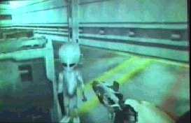
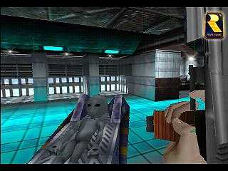

|
.
| Perfect
Dark Version Beta : Zone 51 Evasion |
| Pas
grand-chose non plus pour cette Mission. Sur la Photo à Gauche,
pas de Gaz
Vert, c'est tout ! Photo
de Droite,
Elvis est plus Petit que sur la Version Finale. Et il a une Arme !
Enfin, sur la Dernière
Photo,
Elvis et Joanna sont dans les Douches !
|


